Nanyang Technological University · Singapore
Reading catalysts while they work.
LabDS is an interdisciplinary research group designing next-generation catalysts, resolving reaction mechanisms in real time, and using AI-driven approaches to advance clean energy and sustainable chemistry.
Mission
Structure, in the act of reacting
We work across catalysis, spectroscopy, and materials physics to see what static characterization misses.
We are an interdisciplinary research group at Nanyang Technological University (NTU), Singapore, focusing on advanced catalysis, operando spectroscopy, and the fundamental physical properties of matter.
Our mission is to design next-generation catalysts, uncover reaction mechanisms, and leverage AI-driven approaches to tackle challenges in clean energy and sustainable chemistry.
Read more about our research →Our interests
Five threads, one lab
Structure–performance relationships in energy and chemical systems.
Metal Nanoparticles & Alloys
Phase control and morphology tuning for enhanced catalytic activity.
- Phase-controlled synthesis
- Morphology & facet tuning
- Structure–activity relationships
Liquid Metal Catalysis
Harnessing interfacial dynamics and unique physical properties.
- Liquid-metal interfacial dynamics
- Self-healing catalytic surfaces
- Physical property studies
Biomass Conversion & Electrocatalysis
HMF-to-FDCA, CO₂ hydrogenation, and fuel cell reactions.
- HMF-to-FDCA oxidation
- CO₂ hydrogenation
- Fuel cell reaction pathways
Operando Spectroscopy
HAXPES, XAFS, DRIFTS, and synchrotron-based techniques.
- HAXPES & XAFS
- DRIFTS
- Synchrotron beamline studies
AI-Driven Catalyst Design
Combining machine learning with DFT for predictive discovery.
- Machine-learned potentials
- DFT-guided screening
- Predictive materials discovery
Lab activity
Latest from the group
Publications, milestones, and comings & goings.
Publications & Recognition
Add your latest papers, awards, and press mentions here — or keep them synced from your Publications page.
Group Milestones
New joiners, defences, conference talks, and lab activity go here — see the full Lab Activity page.
Principal Investigators
Led by
Two Nanyang Assistant Professors driving the lab's experimental and computational work.
Dr. WU Dongshuang
Nanyang Assistant Professor
Catalysis, advanced characterisation, and materials chemistry — leading the lab's work on structure–performance relationships in energy and chemical systems.
dongshuang.wu@ntu.edu.sg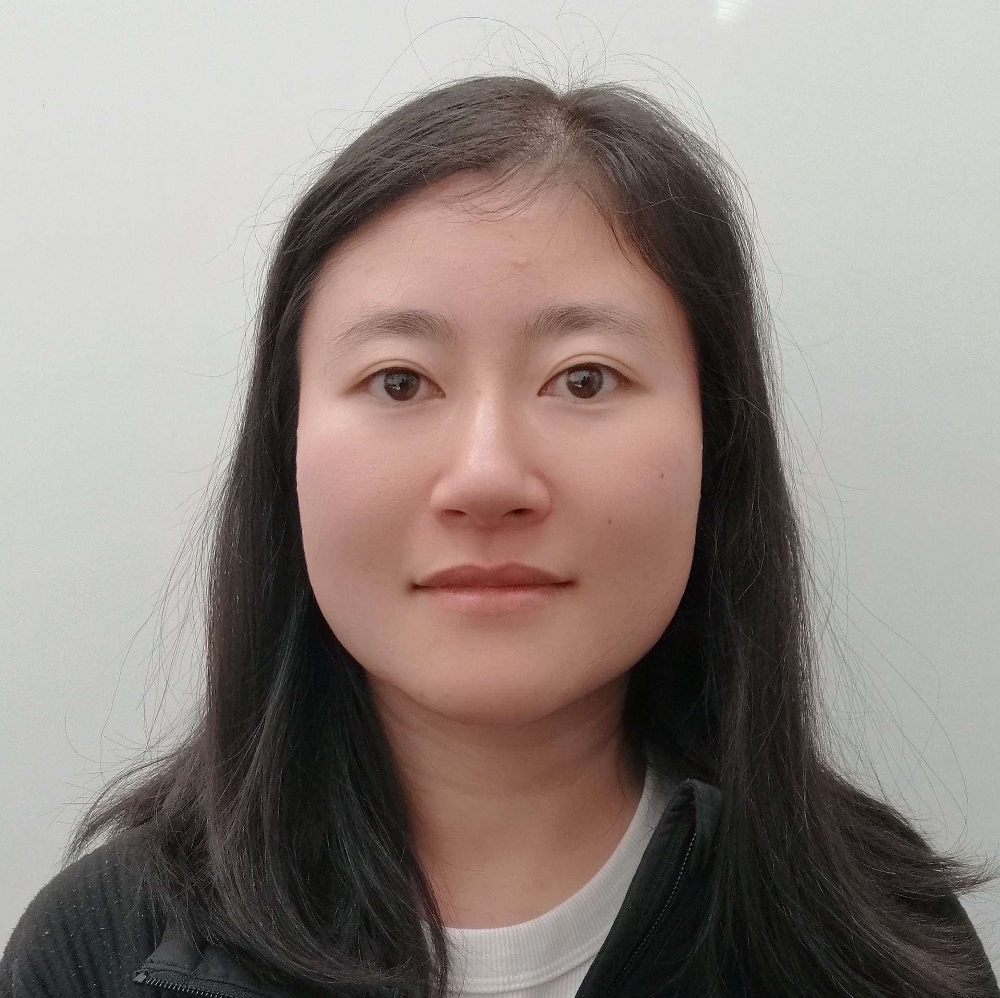
LHDr. LI Haobo
Nanyang Assistant Professor · DS Fellow
AI and DFT-driven approaches to catalyst design, bridging machine learning and first-principles methods for predictive materials discovery.
haobo.li@ntu.edu.sgOur people
The group
Postdocs and graduate students across catalysis and spectroscopy.
Postdoctoral Researchers
Dr. DENG Xiaohui
Electrocatalysis
 GH
GH
Dr. GU Huayu
Thermal Catalysis and Modelling
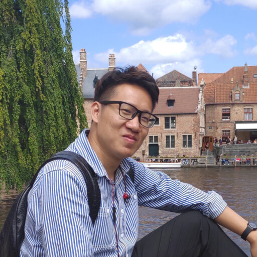
ZYDr. ZAN Yifan
Biomass Conversion
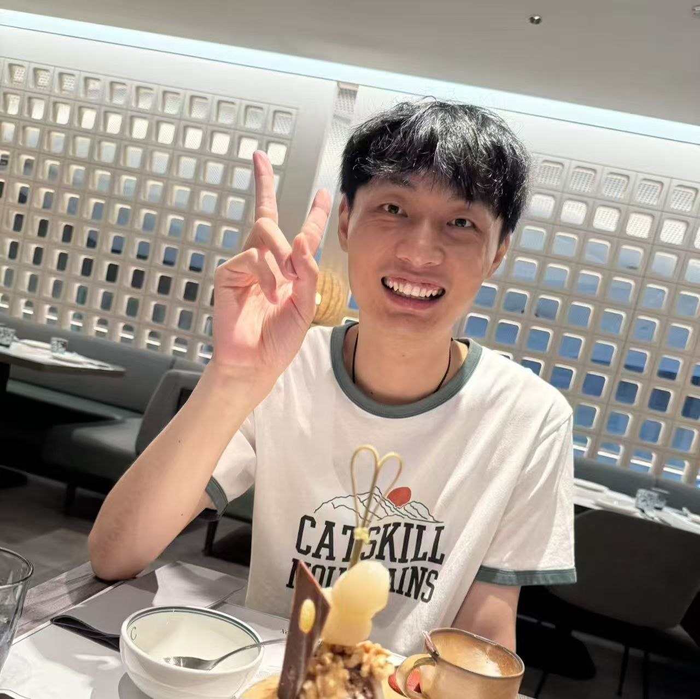
SJDr. SUN Junchuan
Thermal Catalysis and Modelling
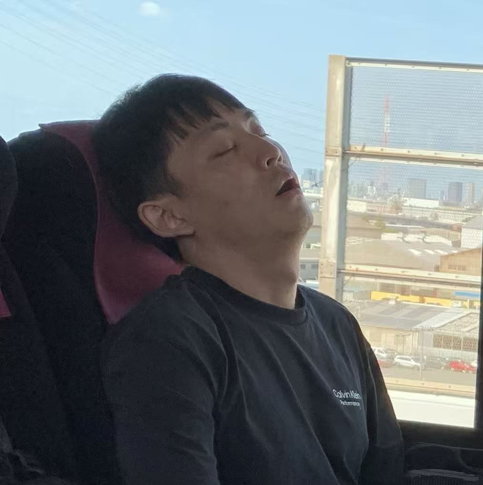
SMDr. SEO Minsik
Operando Spectroscopy
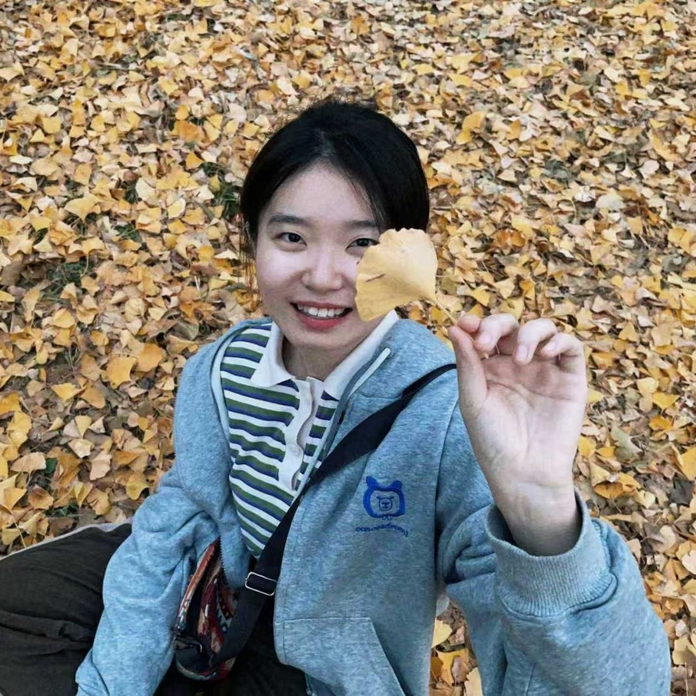
LSDr. LIANG Shuyu
Electrocatalysis and Biomass Conversion
PhD Students
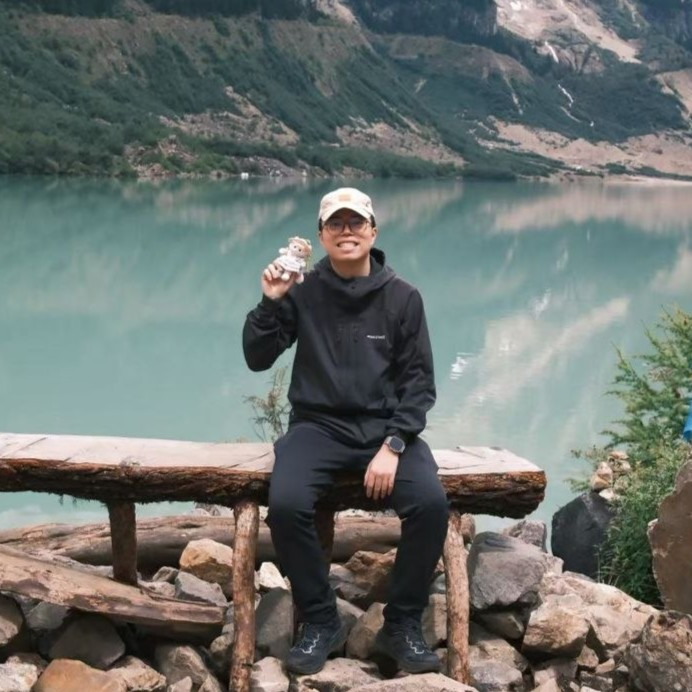
WYWANG Yuanyuan
Liquid metal nanoparticles and their physical properties
XU Yifan
Metal alloys for electrocatalysis
ZHU Bing
High-entropy alloys for thermal catalysis
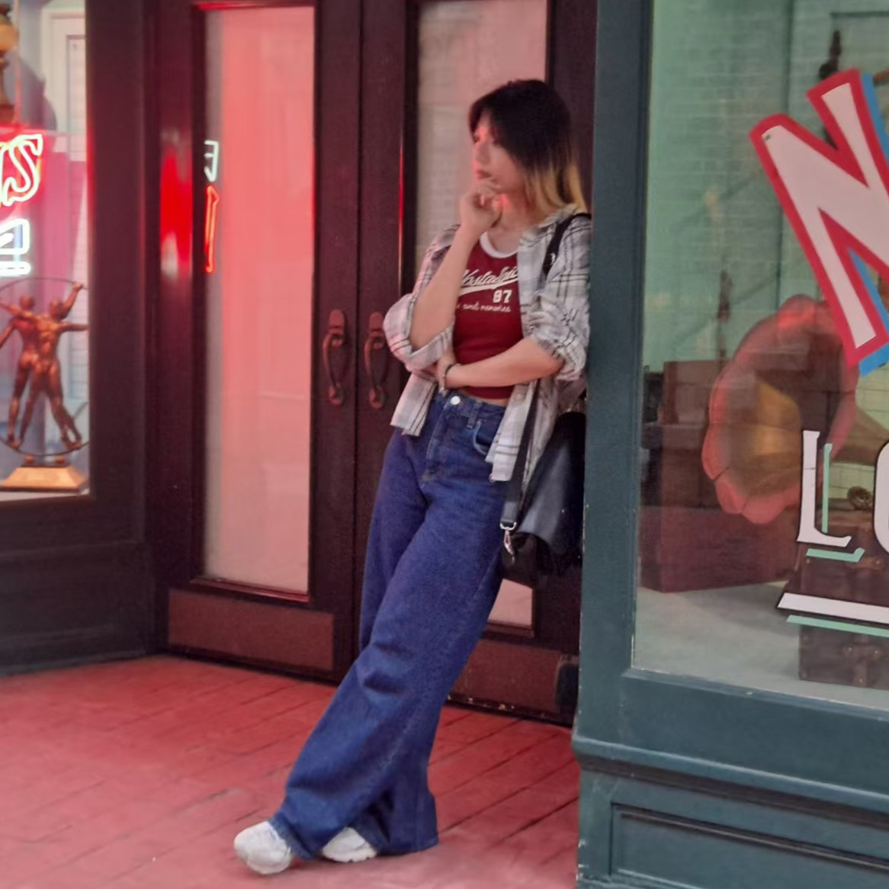
KMKIM Minji
Supported catalysts for water splitting
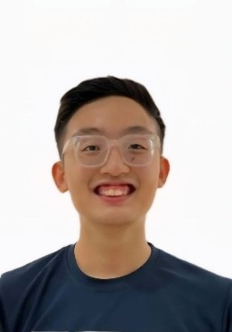
TZTOH Ziyang
Supported catalysts for CO₂ hydrogenation
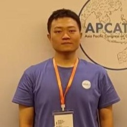
ZWZHANG Weijie
Heterogeneous catalysts for organic molecule synthesis
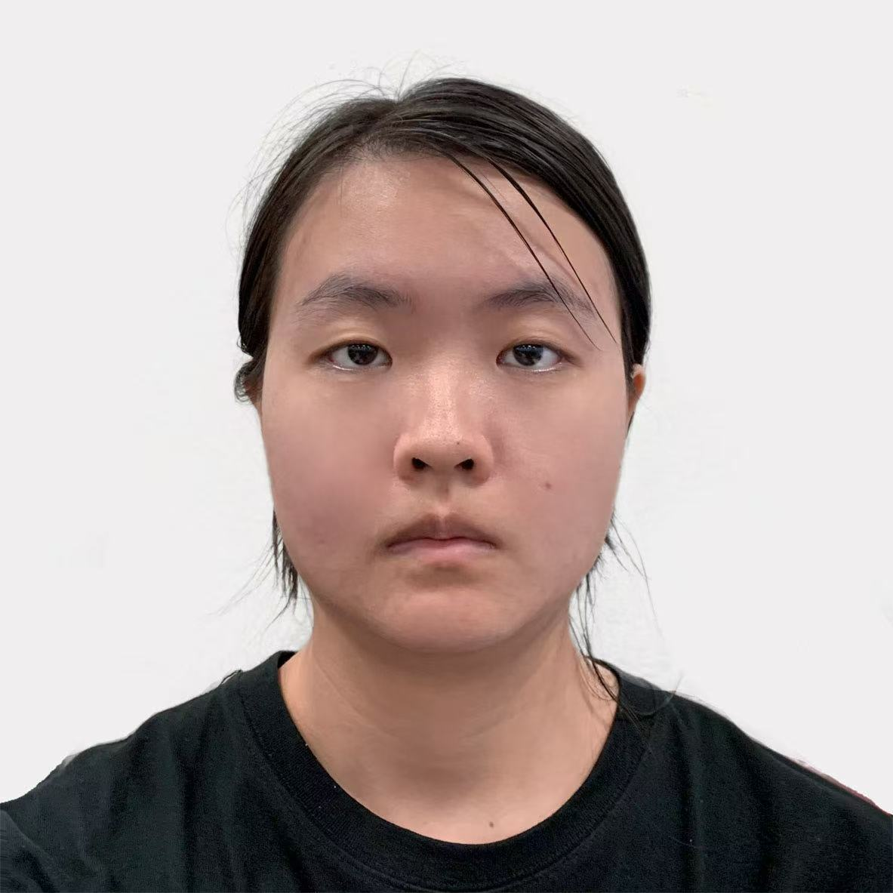
ZWZHAO Wenting
Liquid metal-based catalysts
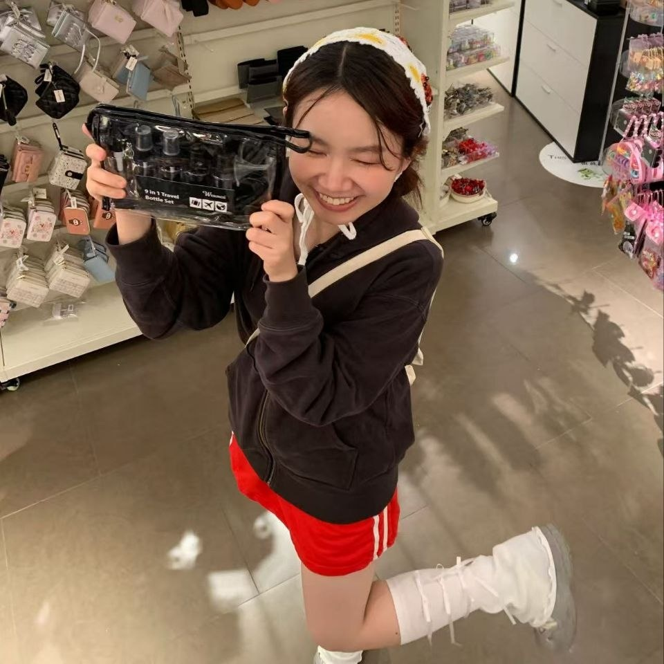
HQHUANG Qiqi
Topic to be determined
ZOU Aiji
Co-supervised with Prof Dong Zhili
 YZ
YZ
YI Zhehan
Co-supervised with Prof Fan Hongjin
Master's, FYP & URECA Students
 ZY
ZY
ZHAI Yiwei
URECA Student
Alumni
- HUANG Shaodao — CSC visiting student, Jiangnan Univ. (2023–2024) → Lecturer, Wenzhou Univ.
- HAN Zengyu — CSC visiting student, Xi'an Jiaotong Univ. (2022–2025) → Final-year PhD student
- SHI Naike — CSC visiting scholar, USTB (2024–2025) → Associate Professor
- ZHANG Jian — CSC visiting scholar, Wuhan Univ. of Technology (2023–2024) → Full Professor
- FAN Xinhang — Master by Engineering (2023–2025) → Industry
- Tian Jiayu — Master by coursework (2023–2024) → PhD, Harbin Institute of Technology
- FU Haoyang — Postdoc (2023–2024) → Postdoc, NTU
- NI Chuyi — Postdoc (2024–2025) → Industry
- WANG Liwen — Postdoc (2022–2023) → Postdoc, Nanjing Univ.
- WANG Tzu-Wei — URECA Student (2024–2025)
- YU Ziying — URECA Student (2023–2024)
- Desmond TOH Hong Yao — FYP student (2023)
- SOO Yan — FYP student (2023)
- Javine CHAN — FYP student (2024)
- Firdaus Bin Mohamad Shahrin — FYP student (2025)
- Praharsh Ryan S/O Subash Soman — FYP student (2025)
- Chan Hung Shen — FYP student (2025)
Elsewhere
More from the lab
Publications, activity, and shared resources live alongside this page.